Матеріали Дентсплай Сірона · журнал «ДентАрт» 2017 №3
Естетична реставрація у стоматології дитячого віку
AESTHETIC RESTORATION IN PEDIATRIC DENTISTRY
Проблема карієсу раннього дитинства на сьогодні все ще залишається актуальною. Відсутність лікування карієсу або застосування неефективних методик лікування призводять до розвитку ускладнених форм каріозного процесу, що в подальшому позначається як на загальному, так і на психологічному здоров'ї дитини. Не слід нехтувати естетичними аспектами у маленьких дітей. Особлива актуальність застосування композитних матеріалів у дитячій стоматології зумовлена високим ступенем розвитку каріозних процесів у ранньому дитинстві. Дитячі стоматологи мають унікальну можливість реконструювати дитячі усмішки і тим самим впливати на стоматологічне здоров'я дитини. Діти заслуговують найвищої якості реставраційної стоматології, результат якої прослужить до фізіологічної зміни на постійні зуби.
Одним з найпоширеніших діагнозів у дитячій стоматології є «пляшковий карієс», або множинний карієс раннього віку. «Пляшковий карієс» виникає у всіх соціально-економічних групах. Дітей, які важко засинають або мають кольки, часто заспокоюють за допомогою пляшечки з рідиною, яка містить вуглеводи (молоко, компот). Ця модель розвитку карієсу може також виникати при тривалому грудному вигодовуванні, особливо нічної пори. Як правило, першими при «пляшковому карієсі» уражаються передні зуби верхньої щелепи, далі – перші моляри обох щелеп, а ікла рідше схильні до каріозного процесу, бо пізніше прорізуються. Різці нижньої щелепи найстійкіші до ураження.
Тактика лікування дітей з множинним карієсом передбачає:
- відмову від звичного незбалансованого харчування;
- рекомендації з харчування та корекцію дієти;
- реставрацію зруйнованих зубів.
Завдання будь-якого відновного методу полягає у збереженні повноцінної функції, відновленні естетики, захисті і збереженні здорової структури зуба, що залишилася.
Наші маленькі пацієнти заслуговують найліпшого стоматологічного лікування, яке лікар може запропонувати, адже воно буде формувати їхнє стоматологічне здоров'я в майбутньому.
Початкова клінічна ситуація
Подаємо клінічні випадки чотирьох пацієнтів, вік яких на момент звернення 4 роки, з діагнозом – карієс раннього дитинства. За словами батьків першого пацієнта, дитина була на грудному вигодовуванні як денної, так і нічної пори до двох років. При першому візиті дитини до дитячого стоматолога у віці 2-2,5 року лікар обрав імпрегнаційний метод лікування карієсу, що в подальшому не стабілізувало процес, а лише поглибило проблему.
Скарги батьків на момент звернення до нас у клініку — на прогресування каріозного процесу у дитини, естетичний дефект, неможливість повноцінно відкушувати їжу.
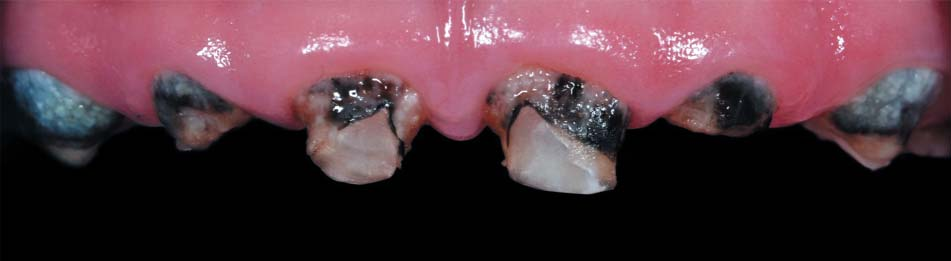
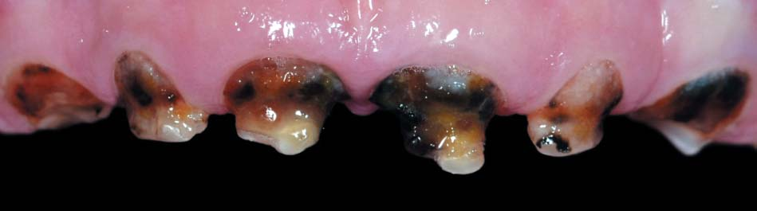

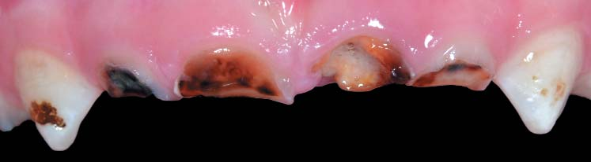
Пацієнт 1. Пацієнт 2. Пацієнт 3. Пацієнт 4.
Лікування
Я відновила зруйновані зуби композитними реставраціями. Усі етапи було виконано під ізоляцією системою рабердам.
Композитні матеріали – невід'ємна частина сучасної дитячої реставраційної стоматології. При дотриманні всіх протоколів вони забезпечують високу якість реставрації як тимчасових, так і постійних зубів.
Існують значні відмінності в анатомії тимчасових зубів у порівнянні з постійними, і це слід враховувати, обираючи реставраційну систему і техніку.
При препаруванні тимчасових зубів треба робити скіс країв емалі для збільшення площі поверхні і видалення апризматичного шару емалі. Скіс слід робити на всю товщину емалі. Апризматичний шар повністю не протравлюється, а відтак можуть залишатися «острівці» непротравленої емалі, які знижуватимуть міцність адгезії.
Протравлювання тимчасових зубів робиться за протоколом: емаль 15 секунд, дентин 7 секунд, рясне промивання 30 секунд.
Для адгезивної підготовки використовувався Prime & Bond One Select (Dentsply DeTrey) – адгезив для всіх технік протравлювання. Prime & Bond One Select – це адгезивна система VIII покоління, яку можна застосовувати в різних техніках адгезивної підготовки – тотального протравлювання, самопротравлювання і селективного протравлювання (вибіркового протравлювання).
Адгезивна система характеризується високою силою адгезії як на зволоженому, так і на пересушеному дентині, що доведено результатами клінічних досліджень, які провадилися в Університеті Латта, Німеччина.
При роботі цим бондом не виникає жодних складнощів – він дозволяє отримати досить тонку адгезивну плівку на поверхні, яка легко роздувається повітрям і до якої легко приклеюється перша порція композиту.
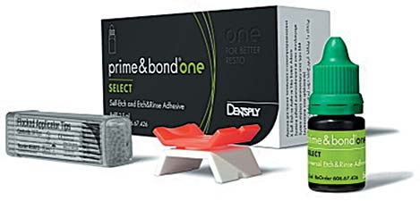
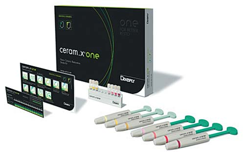
Prime & Bond One Select (Dentsply DeTrey). Ceram X ONE Dentin & Enamel (Dentsply DeTrey).
Оскільки у цьому клінічному випадку коронкова частина тимчасових зубів була істотно уражена каріозним процесом, для реставрації нам був потрібен матеріал, який має високу стійкість до механічних навантажень. Таким матеріалом є Ceram.X One Dentin & Enamel (Dentsply DeTrey). Поряд з традиційним кварцовим наповнювачем в об'ємі 76%, у складі Ceram.X міститься компонент технічної кераміки – нанокерамічна часточка в об'ємі 12%, яка зумовлює унікальні фізичні властивості матеріалу. Неорганічний компонент силоксан забезпечує міцність, роблячи нанокераміку стійкою до розвитку тріщин. Метакрилатна частина робить часточки сумісними і полімеризується з матрицею смоли, тим самим також забезпечуючи високу міцність композитів до навантажень, що доведено результатами клінічних досліджень, які провадилися у Болонському університеті, Італія. Зі 100 реставрацій на рік ризик невдачі – не більше двох реставрацій.
Спостерігаючи за віддаленими результатами своїх робіт, можу відзначити відсутність відколів, гарну герметичність конструкції, відсутність забарвлювання реставрацій.
При лікуванні дітей стоматологи мають обмежений час, оскільки концентрація уваги у дитини значно нижча, ніж у дорослого пацієнта, тому реставраційний матеріал повинен бути легким і зручним у роботі. Маючи досвід роботи матеріалом Ceram.X One Dentin & Enamel, я б відзначила такі його якості:
- не липне до інструмента;
- дуже легко адаптується до стінок порожнини;
- тримає форму до полімеризації.
Пацієнт 1

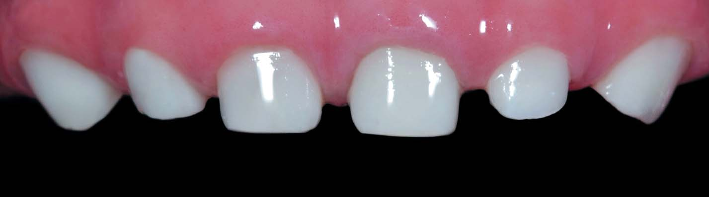
До. Після.
Пацієнт 2
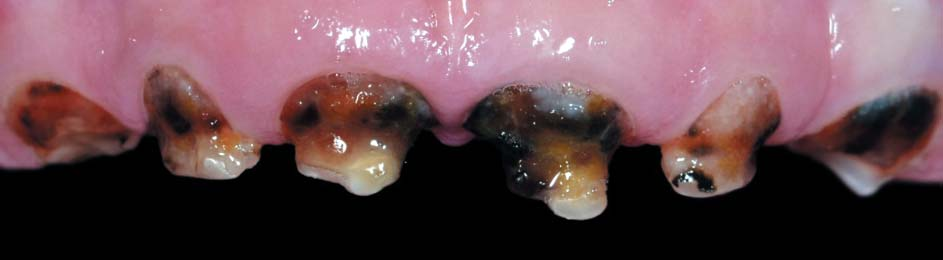
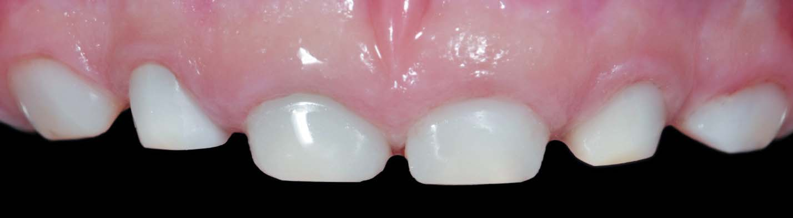
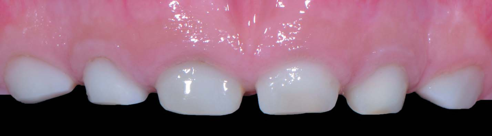
До. Після. Віддалений результат через 12 місяців.
Пацієнт 3
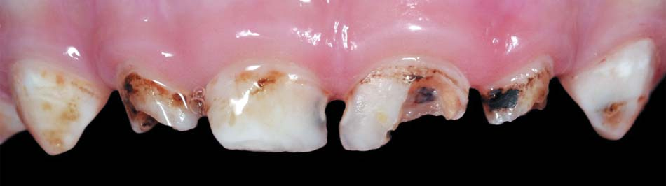
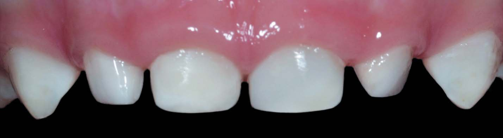
До. Після.
Пацієнт 4
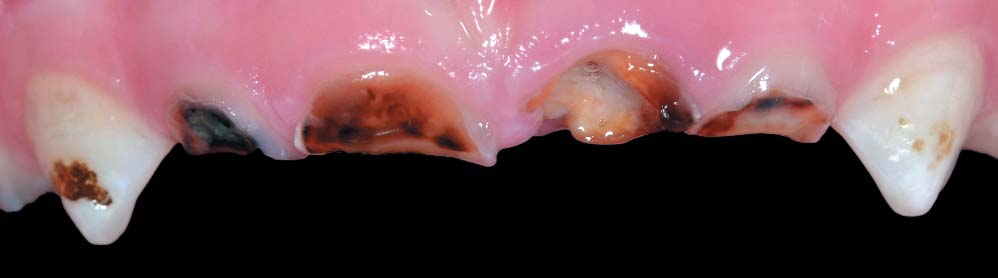
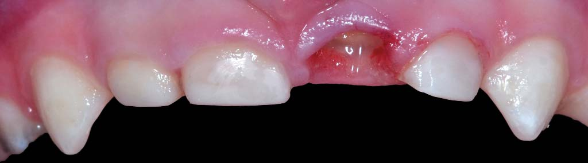
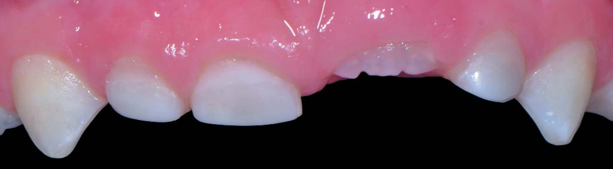
До. Після. Віддалений результат через 12 місяців.
Тимчасові зуби світліші, ніж постійні, це слід ураховувати, обираючи відтінок композитного матеріалу. Ceram.X One Dentin & Enamel має відтінок D1, максимально схожий з кольором тимчасових зубів. Для реставрації тимчасових передніх зубів у мене немає необхідності витрачати час на підбір кольору майбутньої реставрації, досить використовувати один відтінок композиту – це D1 (для відбілених зубів), що є великою перевагою при роботі з дітьми.
Маленькі пацієнти не люблять відчувати на язиці смак м'ятної пасти для полірування, наочно демонструючи це в кріслі: це ж не улюблена сунична паста, якою вони звикли чистити зуби вдома. Тому фінішну обробку та полірування реставрацій я виконую за допомогою системи Enhance Multi (Dentsply DeTrey), яка дає можливість домогтися бажаного сухого блиску реставрації за допомогою лише полірувальних головок, без використання паст, буквально за кілька хвилин.
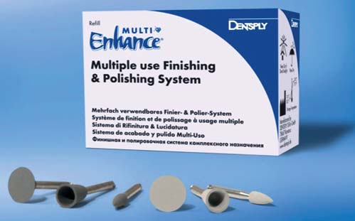
Висновки
Лікування карієсу тимчасових зубів – надзвичайно важливе і водночас складне завдання дитячої стоматології. Від якості і вибору методу лікування залежить можливість збереження функції тимчасового зуба на весь фізіологічний період існування в ротовій порожнині. Метою лікування тимчасових зубів є досягнення тривалого терапевтичного ефекту. Лікар не повинен посилатися на те, що тимчасові зуби лише нетривалий час перебувають у ротовій порожнині, і тому обмежуватися тільки паліативними втручаннями. Методика лікування тимчасових зубів повинна бути такою ж радикальною, як і постійних.